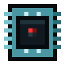

原子炉制御装置
alaindustrial:reactor_controller
概要
原子炉制御装置は、シェルで唯一の「賢い」ブロックであり、この部屋にある唯一の機械です。部屋を 建てているあいだは、自分の周囲から部屋を見つけ、検査し、どこが何故だめなのかを告げます。部屋が 閉じれば、それ自身が原子炉になります。原子炉カラムを集め、発電量と発熱を計算し、水を沸かし、 カラムの各段の流体を組み直し、燃料棒を消耗させ、EU/FE を渡します。
制御装置は垂直な壁のケース 1 個と置き換えて、正面を外へ向けて設置します。正面にはプレイヤーが 読む画面があり、レッドストーンもそこへ引きます。ケーブルはそれ以外のどの面でも構いません。制御装置 が 2 つある部屋は成形しません——部屋の頭脳はちょうどひとつです。
制御装置は動くのに部屋を必要としません。部屋が無ければむき出しモードに入り、半径スキャンで 周囲のラックを見つけ、目に見えて削られた出力を返し、その代償としてラック自身のまわりのブロックを 定期的に溶かします。これは故障ではなくプレイヤーが選んだ道です——詳しくは 「むき出しモード」を。
原子炉にまだ無いもの。 熱のゲージは 100 % まで上がり、そこで止まります。 の目盛りを越えると部屋は自分の中身を溶かしはじめますが、頂点での 爆発はまだありません——それは別の課題です。稼働中の炉心のまわりの放射線はすでにあり、炉心 溶融とは別に働きます。
どこに立てるべきか
| 条件 | 理由 |
|---|---|
| 垂直な壁に（床でも天井でもなく） | 正面は読むためのパネルで、信号もそこへ引く。天井では見えない |
| シェルの稜や角には置かない | 稜のマスには、向くべき「内側」が無い |
| 正面を外へ | 部屋の内側は制御装置の背後にある。向きを逆にすると「制御装置が壁にない」になる |
| 1 部屋にちょうど 1 個 | 同じシェル内の 2 個目は「部屋に 2 台目の制御装置」と座標を告げる |
4 つの条件はすべて同じスキャンで確かめられ、返るのも同じ種類の答え——状態と場所です。別途の 「設定モード」はありません。置いて、画面を見て、直すだけです。
スキャン
スキャナーは 2 パスで動きます。これは実装の都合ではなく、メッセージが役に立つ理由そのものです。
- 6 本のレイを、制御装置の前のマスから ±X・±Y・±Z 方向へ、最初のシェルブロックまで飛ばします。
何にも当たらなかったレイは「その方向に部屋の境界が無い」を意味します——大きすぎるか、壁に空が 見える穴が空いているかです。
- 6 つの当たりで決まった周を丸ごと巡回します。14³ のシェルのどこかに 1 マスだけ欠けていても、
このパスがそれを見つけて座標を告げます。同じ巡回で制御装置の数を数え、ドアのマスを覚え、 ガラスの割合も算出します。
レイの射程は寸法の上限プラス 1 歩で、ちょうど上限ではありません。この 1 歩は余裕ではなく、 「大きすぎる」という状態が存在しうるための条件です。上限ちょうどで打ち切られたレイは、規格より 1 ブロック広い部屋の遠い壁を決して見られません。
単純な塗りつぶしにしない理由: 塗りつぶしは「部屋が大きすぎる」と「部屋が漏れている」を区別でき ません——どちらでも単に行き止まりまで走るだけです。2 パスは 2 つの異なる問いに別々の答えを返します。
検査の順序も、コードではなく使い勝手の判断です。
- 制御装置の位置（正面の前に開いたマスがあるか）；
- 境界 — 6 本のレイ；
- 寸法（小さすぎ、次に大きすぎ）；
- 密閉 — 巡回で最初に見つかった非シェルのマス（そこで巡回を打ち切る）；
- 制御装置自身が稜ではなく壁のマスとして見つかること；
- 2 台目の制御装置；
- 通路；
- ガラスの割合。
どの答えも単独で直せるので、プレイヤーは一覧を渡されるのではなく、一度にひとつずつ直します。 ガラスの上限が最後なのは意図的です。これだけが「柔らかい」問題で、その状態でも建物は密閉されて いて正しく、ただ防護的とは見なされないだけだからです。
| 再スキャンの契機 | 条件 |
|---|---|
| 定期 | 40 ティック = 2 秒ごと |
| 隣接の変化時 | ただちに: 隣の壁を壊した、ポートを置いた、ドアが吹き飛んだ |
定期パスは必須です。隣接更新は制御装置に接する 6 ブロックにしか届きませんが、部屋は差し渡し 14 に なることがあります。遠い壁から抜かれたブロックは制御装置の隣ではありません。同じ理由で、制御装置は 決して「眠り」ません。
状態
状態は 9 種類。うち 8 つは解くべき課題で、9 個目が「完了」です。
| 状態 | 意味 | 場所を示す | 寸法を示す |
|---|---|---|---|
| 部屋が成形された | 密閉かつ寸法内 | — | はい |
| 制御装置が壁にない | 床/天井、稜、埋め込み、向き違い | はい | — |
| 部屋に境界がない | レイが上限を越えても壁を見つけられなかった | — | — |
| 部屋が小さすぎる | いずれかの軸で内寸が下限未満 | — | はい |
| 部屋が大きすぎる | いずれかの軸で内寸が上限超過 | — | はい |
| シェルに破れがある | 周のマスがシェルのブロックではない | はい | — |
| 通路がない | ドアはあるが通路が無い | — | — |
| 部屋に 2 台目の制御装置 | 同じシェルにもう 1 台立っている | はい | — |
| ガラスが多すぎる | ガラスがシェルのマスの 30 % を超えた | はい | — |
「ガラスが多すぎる」が指す場所は「悪い」マスではなく（悪いのは割合で、ブロックではありません）、 巡回順で最初のガラスのマスです。煙がプレイヤーをシェルのガラス部分へ導くために要ります。
原子炉をどう動かすか
組み上がった部屋は 1 台の機械であり、そのティック全体を制御装置が実行します。燃料カラムに自前の ティックはまったくありません。ラック 30 本のホールでも、サーバーの負荷はエンティティ付きブロック 1 個ぶんです。
カラムの収集
シェルの検査と同じ巡回（40 ティックに 1 回）で、制御装置は部屋の内側を歩き、すべての原子炉 カラムを記録します——装填済みも空も。同時にウラン入りの燃料棒を合計し、隣接の組数を数えます。
空のカラムを一覧に入れるのは意図的です。燃料で絞る条件は無害に見えて、そうではありませんでした。 空のラックが水回路と段の組み直しから外れ、カラムの下へ送った水が最初の装填済みより上へ上がらなく なるのです。カラムが機械の一部なのは部屋の中に立っているからであって、誰かが詰め終えたからでは ありません。
一方で隣接は燃料で数えます。空のラックが 2 本並んでも何も加速しません。さもなければボーナスを 足場に払うことになります。
12³ の内側の巡回はブロック読み取り 1728 回です。毎秒 60 回なら馬鹿げていますが、2 秒に 1 回なら 安いものです。代償は遅延で、手で差した燃料棒は次の巡回から計算に入ります。
発電・燃料・発熱
| 量 | 計算方法 |
|---|---|
| ポテンシャル（100 % 時） | 燃料棒 × 6 × M電、M電 = 1 + 0.5 × 隣接組数 |
| 出力 | × 深さ‰ / 1000`、ただしバッファの空き以下 |
| 発熱 | 満熱 × 出力 / ポテンシャル、満熱 燃料棒 × 4 × M熱、M熱 = 1 + 0.8 × 隣接組数 |
| 燃料消費 | ちょうど出力ぶんの EU/FE。各カラムの燃料棒数に比例して分配 |
| 熱 | clamp(熱 + 発熱 − 水が奪った分 − 自然放熱, 0, 10000) |
上限は絞りより先に適用されます。 まずポテンシャルを 512 EU/FE/t に抑え、そのあとで深さを掛けます。 逆順は等価に見えて等価ではありません。ポテンシャルがすでに 512 を超えた領域では、スライダーのどの 段も同じ 512 EU/FE/t を返してしまいます。
燃料は時間ではなく EU/FE で数えます。 制御装置はカラムから、自分が出した分だけのエネルギーを引き、 カラムはそれを燃料棒の耐久の目盛（1 目盛 144 EU/FE）に換算します。ここからこのモデルの中心的性質が 導かれます。燃料棒はどこでも 144 000 EU/FE であり、どんな配置もウランを安くしません。
発熱には独自の隣接係数があり、発電のそれより大きい — 40 % 対 25 %。水回路の要となる数字 です。密な領域は強くなる以上に熱くなるので、出力を上げる配置は冷却の代価も上げます。
同じ割り算が発熱を上から抑えてもいます。
HV 上限での発熱 → 512 × (4 × 0.8) / (6 × 0.5 = 546 /t上限にいる密な部屋の発熱は 1 ティックあたり 500〜546 で、546 を超える部屋はひとつもありません。
大きな部屋が与えるのは出力ではなく自立時間です。 512 EU/FE/t を超えたものはどれも同じ 512 EU/FE/t を返し、伸びるのは補給の間隔だけです。しかも上限に達した配置なら消費は同じ——燃料棒 256 本 = ウラン鉱石 128 個/時。配置ごとの数字は
熱は原子炉が止まっていても毎ティック精算されます。冷却が働かなければ「止めて待つ」が助かる手段 になりません。満スケールがゼロまで下がるのに 395 ティック（19.8 秒）かかります。 の目盛りを越えると、部屋は自分の中身を溶かしはじめます—— 「炉心溶融」を参照。目盛りの頂点そのものには、まだ結果がありません。
操作: レッドストーンと深さ
| 操作系 | 何をするか |
|---|---|
| 制御装置へのレッドストーン信号 | ありで運転、切れば緊急停止 |
| 深さスライダー | 0 / 25 / 50 / 75 / 100 % の 5 段。0 % は画面から行う停止 |
操作系をこれ以上増やさないのは意図的です。煙の立つホールに立ったプレイヤーの頭に収まるのは、 ちょうど 2 つまでです。
スライダーはどの規模でも効きます。すでに上限で抑えた値を切るので、床一面の 3×3 で 50 % なら 256 EU/FE/t——熱も水も 1 時間あたりのウランもちょうど半分です。
冷却: シェルが自力で、水は閾値の先だけ
放熱曲線は 2 項からなり、肝心なのは第 2 項です。
放熱 = 4 + 熱 × 8 / 1000比例項が原子炉にスイッチではなく平衡を与えます。いまはどの領域も、発生と損失が釣り合う点に 落ち着きます。
平衡 = (発熱 − 4) × 1000 / 8| 活性領域 | 発熱 /t | 平衡 | ゲージ | 水 |
|---|---|---|---|---|
| カラム 1 本（燃料棒 4 本） | 16 | 1500 | 15 % | 不要 |
| カラム 2 本並び | 57 | 乾式で 6625 | 乾式 66 %、給水時 60 % | 必須ではない（引けば 3 mB/t） |
| 一列に 3 本（燃料棒 12 本） | 124 | 上限超え | 給水時 60 % | 必要 |
シェルの上限は 84 /t です。それ以下ならすべて自力で保ち、それを超えたところから回路の出番です。
水はラジエーターではなく安全装置です。目標点（60 % = 6000）を越えたときにだけ働き、2 つを 取り除きます。今の流入と、すでに積み上がった過熱の 20 分の 1 です。目標点は警告域（70 %）より 意図的に低く置いてあります。回路の役目は原子炉を緑へ戻すことであって、警告線に停めることでは ありません。
目標 = 10000 × 60 / 100 （既定で 6000）
超過 = 熱 < 目標 ? 0: (発熱 − 放熱) + (熱 − 目標) / 20
水 mB = ceil(超過 / 2) （**切り上げ**）
除去 = 沸騰量 × 2第 1 項が線を守り、第 2 項がそこへ戻します。第 2 項が無ければ、赤熱した領域は見つかった温度のまま 凍りつきます——それは回路が動いていないのと見分けがつきません。
最初の原子炉に配管は要りません。 燃料棒 4 本のカラム 1 本は 1 ティックあたり 16 の熱を出し、 乾いたままゲージの 15 % で落ち着きます。水が本当に必須になるのは3 本目のカラムから （124 /t、36 mB/t）です。
水を通した健全な原子炉はゲージの 60 % に立ちます — つまり熱のバーは緑で、黄色はふたたび 「何かおかしい」を意味します。供給が追いつかない、排気が詰まった、あるいは回路なしで出力を 上げた、ということです。
沸かすのはカラムではなく制御装置です。自分のカラム一覧を回り、まだ足りない分をそれぞれに要求します。 沸かしきれなかった分は熱として残り、ゲージへ乗ります。
段の組み直し
制御装置は毎ティック、連続した縦一続きのカラム内部の流体を整えます。水はすべて下に、蒸気は すべて上に。こうして一続きはひとつの容器のように振る舞い、そのどのブロックに挿したパイプでも全体を 満たせます。
⚠️ 横に並んだカラムはつながっていません。 何もつないでいないラックの内側に冷却材が現れるのは、 どれほど便利でもバグに見えます。
むき出しモード: 部屋のない原子炉
部屋が組み上がらなかった制御装置は遊んでいるわけではありません。装填済みのラックが物理的に 接していれば、それらを直接動かしにかかります。これは非常状態ではなく、2 つ目の完全な運転 モードです。
つながりは物理的でなければなりません。 制御装置は自分から外へ向かって、接しているラック と遮蔽合金のブロックを辿って進みます——組みかけのシェルも伝わる、ということです。 むき出しの地面は反応を伝えません。すきまを挟んで 3 ブロック離れて立っているカラムは、どれだけ 積まれていても原子炉の一部とは見なされません。 は探索半径ではなく、 その巡回の長さの上限です。
この規則はプレイテストから生まれました。以前は探索が半径で行われていたため、むき出しの地面 に置いた制御装置が、すきまの向こうのカラムから火を入れられていました。エネルギーが空中を 渡っていくように見えたのです。密着していれば動く——それこそが必要な手触りです。
バッファが満杯でも危険は止まりません。 燃料が減るのはエネルギーが求められたときだけで （それは正しい振る舞いです）、電気を買う相手がいるかどうかにかかわらず、反応そのものは進みます。 ですからブロックの損壊は、そのティックの出力ではなく「原子炉が停止しておらず、燃料が入って いる」ことに結びついています——そうでなければ、消費者を外すだけで止められてしまうからです。 放射線も同じ振る舞いで、ずっとそうでした。
| 密閉された部屋 | むき出しモード | |
|---|---|---|
| ラックの見つけ方 | 壁の巡回。範囲は部屋が決める | 接しているラックと遮蔽合金のブロックを辿る巡回 |
| 出力 | 満額。部屋が大きくなるほど伸びる | 同じ配置の 、しかも を超えない |
| 発熱と水 | 完全な熱モデルと冷却回路 | どちらも無し: むき出しの原子炉に冷やすものは無く、パネルに熱ゲージも水ゲージも出ない |
| 深さスライダー | 効く | 無視される——燃料棒は常に降りきっている |
| EU/FE の行き先 | 壁の reactor_outlet 端子から | 制御装置の面から直接——むき出しモードでは出力端子は死んでいる |
| 危険 | 過熱の目盛りを越えると中身が溶ける | 動いているあいだ、まわりを溶かしつづける |
| 放射線 | 壁が止める | 遮るものなく周囲へ届く |
むき出しの原子炉が聞く操作系はレッドストーンだけです。信号を切れば完全に止まり、これは実用的な 戦術でもあります。生きた炉心のまわりにシェルを落ち着いて組み上げたいなら、レバーを倒すだけで 済みます。
深さスライダーは意図的に表示も適用もされません。 見えないところで効くスライダーは罠になります。 燃料棒を抜いた部屋の壁が破られたとき、その部屋は何も告げずに黙り込むことになるからです。
出力は割合と上限の二重に削られていて、どちらの制限も必要です。 割合はむき出しの原子炉を建てた 部屋より弱くし、上限は「ならば燃料棒を積み増せばいい」という答えを封じます。上限が無ければ、 十分に大きな山が部屋を上回ってしまい、シェルと冷却回路は飾りになります。
どのラックが誰のものか
ひと山のラックのそばに制御装置が 2 台あれば、どちらも山を丸ごと数えてしまいます——それは空気から 生まれるエネルギーです。規則は 2 つで、どちらもディスクへの記録なしに 1 回のスキャンで片づきます。
他人の密閉された部屋の中のラックは、外からは誰にも見えません。 動いている原子炉のそばに置いた むき出しの制御装置は、そこから餌を取れません。 むき出しの制御装置どうしでは、ラックは近いほうのものになります。 同点は距離だけでなく座標で 解きます。それぞれが自分なりに判定する規則では、同じラックが両方のものになってしまうからです。
既知の隙間: 読み込まれていないチャンクの制御装置は見えないので、チャンク境界の遠い端にあるラック が短いあいだ二重に数えられることがあります。隣が読み込まれるまでの数 EU/FE/t の話であり、チャンクの 強制読み込みで塞ぐのは病より重い薬です。
炉心溶融: 過熱の代償
の目盛りを越えると、密閉された部屋は自分の中身を溶かしはじめます。 床、普通のパイプ、そしてプレイヤーが中へ持ち込んだものすべてです。最初に失われるのは、どこに置かれて いようと必ず普通の液体パイプです。手元にあるもので組む部品だからこそ、何がまずかったのかをいちばん よく説明してくれます。
シェル自体は無傷です。 ケース、ガラス、ドア、入口、出力端子、そして制御装置自身は、内側の外の輪 の上に立っていて、選択対象にまったく入りません。部屋を建てたのはまさにこのためです——事故は内側に とどまります。
燃料の入ったラックも無傷です。 これらは遮蔽板を芯にして組まれており、原子炉に耐えるために作った 部品は、その事故にも耐えます。中のウランは失われません——炉心溶融がプレイヤーから奪うのは周りの配管 と時間であって、燃料の備蓄ではありません。
溶けたブロック 1 個ごとに の熱が去るので、炉心溶融は自分で自分を 抑えます——部屋は自分の中身を食べながら冷えていきます。プレイヤーは中身とその中の燃料を失います が、残るのはクレーターではなく、積み直せるシェルです。
そのあいだ、パネルの見出しには幾何学的な判定の代わりに「炉心溶融」が出ます。完全に無傷なシェル はこの瞬間も真実を告げていますが、それは考えうるかぎりもっとも役に立たない真実です。
ブロックの融解: どう見えるか
どちらのモードもブロックの壊し方は同じで、必ず先に——そのブロックのところで、名指しで—— 警告します。
- ブロックが選ばれます。炎と煙が上がり、じゅっという音がします。
- （2 秒）が過ぎます。逃げる、あるいはその上に載っているものを退かす——
この余地こそが、危険と罰の違いです。
- ブロックが溶岩の源になります。選定は上が空気になっているマスを優先します。ラックを
囲む球は半分が地下に潜っているため、この規則が無いと損壊の大半が足元の岩を見えないところで 掘り抜いてしまい、目に見える傷跡は公称の半径の半分の幅にしか見えませんでした。そのあいだに プレイヤーが壊していれば何も起きません。選択は盲目に実行されるのではなく、もう一度 確かめられます。
どちらのモードでも溶けないもの: 空気、内部に液体を持つものすべて（水没ブロックを含みます——水は どこでも溶岩を止め、部屋を水浸しにするのは正当な戦術です）、そして破壊不能なものすべて。名前の一覧 ではなくブロック自身の性質で判定するので、他のモッドの独自の岩盤も自然に尊重されます。
どこでも、いつでも溶けないもの: 遮蔽合金から作られたものすべて。すなわち原子炉のブロック —ケース、ガラス、ドア、入口、出力端子、ランプ、ボタン、ラック、制御装置——と遮蔽チェスト です。規則はまさに「遮蔽合金で作られているから溶けない」であって、「原子炉のものだから」では ありません。一覧はブロックタグ にあり、データパックから追加できます。 これが無ければ「長期戦略としてのむき出し発電所」は選択肢ではなく導火線になります。半径内の それ以外——プレイヤーのケーブル、パイプ、チェスト、足元の地面——は正当な標的であり、 それこそが近道の代金です。
むき出しモードの半径は、制御装置からではなく、装填済みのラックそれぞれから測ります。 制御装置 は頭脳であって、危険なのは燃料です。放射線もすでに同じ数え方をしているので、どちらの仕組みも「どこ まで離れれば危ないのか」という問いに同じ答えを返します。制御装置から測るのは誤りで、それは原子炉の 裏側へ回れば見えました。制御装置は壁の中に立っているため、球の半分は自分自身の無敵な本体が占めて しまい、被害はすべて制御装置が向いている側に落ちていたのです。
⚠️ 溶岩は流れます。 溶けたブロックは溶岩源になり、溶岩はバニラの規則どおりに広がります——横へ は 3 ブロックまで、下へは際限なく。溶けたブロック 1 個は 1 個分の損失ではなく水たまりであり、組み かけのシェルの穴からは中へ流れ込みます。この厳しさは意図的ですが、惜しいもののすぐ隣にむき出しの 発電所を建てるのはやめておくべきです。
⚠️ プレイヤーやモブの下のブロックは保護されません。 この厳しさは意図的です。すでに始まって いる事故のただ中で、不注意から死ぬこともありえます。安全のために位置を飛ばすことはしません。
で丸ごと切れます。切った状態でも警告はすべて残り——音、 パーティクル、状態表示——ブロックはひとつも変わりません。この設定はワールドを守るものであって、 原子炉の状態を隠すものではありません。
インターフェース
種類: スロットのひとつも無い画面です——制御装置は読むもので、物を入れるものではありません。 インベントリが無いのは意図的で、空きスロットはホッパーを誘います。 アップグレード欄はありません: 制御装置は加工機械ではありません。 進捗の矢印もありません: 原子炉に「進行中」の作業はありません。
レイアウトは 2 つで、同時に出ることは決してありません。 シェルが閉じるまで原子炉には数字が ひとつも存在せず、閉じたあとは破れの行に言うことがありません。
| レイアウト | いつ | 何が載るか |
|---|---|---|
| 建設 | 「成形済み」以外のすべての状態 | 状態、「部屋」＝寸法 X × Y × Z、「問題」＝不良マスへの方向、充電ゲージ |
| むき出しモード | 「成形済み」以外 かつ スキャンがラックを見つけた | 上のすべてに加えて 3 行: 「モード」＝「むき出しモード」、「燃料棒」、「出力」EU/FE/t |
| 運転 | 部屋が成形済み | 状態、「燃料棒」、「出力」EU/FE/t、熱ゲージ、消費量をラベルに載せた水ゲージ、5 ボタンの深さスライダー、充電ゲージ |
むき出しモードは建設の診断を置き換えるのではなく、その下に書き足されます。 これは原則です。 どちらの状態も同じ「成形済みでない」で立ち上がるので、片方を片方に差し替えるレイアウトは、本当に 部屋を建てているプレイヤーから寸法・不具合・穴への方向を奪うことになります——部屋を建てるつもりの なかったプレイヤーのために。むき出しモードの行は、スキャンが実際にラックを見つけたときにだけ現れ ます。見つかっていないあいだ、パネルはこれまでどおりのままです。
むき出しモードに熱ゲージと水ゲージが無いのは意図的です。ゼロで描くのは、描かないより悪くなります。 空の温度バーは「温度計が無い」ではなく「原子炉は冷えている」と読めてしまい、決して働かない回路を 引くよう誘うからです。
充電ゲージは両方のレイアウトに描かれます — そうする唯一の要素です。停止した原子炉も、いま開けて しまった部屋も、貯めた分はそのまま持っています。まさにその瞬間、残量が知りたくなるのです。
「出力」の行に棒線が出ることはありません。 組み上がって装填済みなのに黙っている原子炉は、この 機械の最悪の状態です。だからそこにはゼロではなく、止まっている理由が赤で出ます: 密閉されて いない、燃料が無い、燃料棒が抜かれている、レッドストーンが無い、バッファが満杯。
水ゲージのラベルは残量と消費の両方を載せます: 「水 62 % · 243 mB/t」。
熱のバーは余裕があるうちは緑、70 % から黄、そこから 100 % までの中間（85 %）で赤になります。閾値は 画面に埋め込まず設定から取ります。
水バーの色は排気詰まりの指標です。
| 色 | いつ | 意味 |
|---|---|---|
| 青緑 | 水がゼロより多く、蒸気が 90 % 未満 | 回路は回っている |
| 黄 | 蒸気 90 % 以上 | 蒸気の行き場が無い: 排気が未接続、詰まり、またはノズルが壁を向いている |
| 赤 | 水がゼロ | 回路が乾いた: 供給が追いつかないか止まった |
黄のケースこそ、この配色を書いた唯一の理由です。排気が詰まると、水バーは安心させるように満杯の まま、温度だけが上がっていきます。
場所は座標ではなく方向です。 ずれは制御装置自身から数え、「東へ 4、上へ 2」と読めます。画面を 読むプレイヤーは制御装置のそばに立っているので、この言い方のほうが数字 3 つより早く目的のマスへ たどり着きます。
外からも状態は分かります。成形された部屋では制御装置の正面が光り、未成形なら暗いままです。
ワールドでのフィードバック
1000 ブロックの部屋にテキストだけでは足りないので、制御装置は音とパーティクルでも応えます。
| 出来事 | 何が起きるか |
|---|---|
| 部屋が成形した | 制御装置のところで金床の落下音 + 上に 12 個のパーティクル |
| 部屋が壊れた | 破れの場所でビーコンの停止音が、ちょうど 1 回 |
| 問題が直るまで | スキャンのたびに問題のマスで煙 16 個 |
故障音が鳴るのは遷移のときだけで、繰り返しではありません。これは原則です。2 秒ごとに繰り返す 警報は、助言から罰へ変わります。
成形の音は蒸留塔が塔として組み上がるときと同じです。 モッドの中で「マルチブロックが組み上がった」は同じ音であるべきだからです。
シェル状態の塗り替え
「成形済み」と「稜」のフラグを立てるのは制御装置だけで、しかも自分だけでなくシェル全体に立て ます。部屋の明かりを点けるのも同じ処理です（原子炉ランプを参照）。
| 項目 | 値 |
|---|---|
| 何を巡るか | 明示的に渡された箱の周のマス |
| 成功時の箱 | このスキャンで測った箱。同時に記憶される |
| 失敗時の箱 | 最後に記憶した箱 — かつて認めたもの |
| 何を書くか | 値が変わったマスだけ |
| 光 | ランプの向かいの内側マスごとにレベル 15 の光ブロックが現れる |
なぜ箱を明示的に渡すのか。 失敗したスキャンは箱を測りません。そのため結果を基にした塗り替えは、 物理的にフラグを立てることしかできませんでした。壁を撃ち抜いても、部屋は何事も無かったように 継ぎ目なしで明るいままだったのです。いまの制御装置は最後に認めた箱を覚えていて、失敗時にはそれを 消します。箱は保存されます。チャンクは無傷で降ろされ、穴が空いた状態で読み込まれうるからです。
エネルギー
| 項目 | 値 |
|---|---|
| 役割 | 供給側、ティア HV |
| バッファ (EU/FE) | 200 000 |
| 最大入力 (EU/FE/tick) | 0 — 原子炉は外から充電されない |
| 最大出力 (EU/FE/tick) | 512 = HV の上限 |
| 面 | 正面以外はすべて出力。正面はエネルギー的に無役 |
正面がエネルギー的に不活性なのは、そこにプレイヤーの読むパネルがあるからです。インターフェースの 真ん中からケーブルが生えていては、見た目も理解も台無しになります。
200 000 EU/FE のバッファは貯蔵ではなく緩衝です。いますぐ受け取れない送電網のせいで、炉心がティックの 途中で止まってはいけません。上限では 391 ティック（19.5 秒）ぶんの出力にあたります。 エレクトラムケーブル1 区間が 192 EU/FE/t なので、上限で回る 原子炉は独立した3 系統で汲み出せます。
ブロックの性質
| 項目 | 値 |
|---|---|
| 形状 | 完全な立方体 16³（遮蔽） |
| 硬さ | 5.0 |
| 爆発耐性 | 30.0 |
| 道具 | ツルハシ（ドロップに必須） |
| 音 | 金属 |
| 向き | 水平。加えて「成形済み」状態 |
判定結果をディスクへ書くことはありません。部屋そのものがセーブだからです。ワールドを読み 込めば、最初のスキャンが周囲に立っているものから状態を導き直します。
保存するのはワールドから導けないものだけです。最後に認めた箱の範囲、たまった熱、そして スライダーの位置。チャンクのアンロードでこれらを忘れる原子炉は、無駄に冷え、勝手に全開へ戻って しまいます。
音
熱が警告のしきい値を超えると、制御装置はサイレン を一度だけ鳴らし ます。壁も閉じたエアロックもこの音を弱めません。部屋にいない者に向けた音だからこそ、部屋のはるか外 まで届きます。二度目に鳴るのは、冷却が炉心をしきい値よりかなり下まで戻したあとだけです — 目盛りが 揺れるたびに鳴る警報は、もはや警報ではありません。
しかし目盛りが上限に張り付いた場合は話が別です。熱が百パーセントにとどまっているあいだ、サイレンは 鳴りやみません。三秒から五秒の不規則な間隔で繰り返し鳴り続け、温度が下がりはじめて初めて止まりま す。そこで一度きりの合図にしてしまえば最悪です — もっとも危険な状態の原子炉が、ただ熱いだけの原子炉 より静かになってしまいます。
原子炉の停止は理由を問わず — レッドストーンが切れ た、燃料が尽きた、制御棒が抜かれた、外殻が破られた — 出力が失われていく下降音 で応えます。部屋が組み上がったときの短い合図と、気密が破れたと きの音は、上の「ワールドでのフィードバック」に記載されています。
レシピ
クラフト: 一度に ×1。
S C S S = 遮蔽板 ×4
R A R R = 強化遮蔽板 ×2
S D S C = 原子炉制御回路 ×1
A = 高度な機械ケース ×1
D = 制御棒駆動機構 ×1原子炉制御回路は独立したアイテムです。パラジウム板 4 枚、共振コイル、高度な回路 2 個、電子回路 1 個、レッドストーン。
コイルは初版にあった不安定同位体の代わりです。同位体はインキュベーター の産物であり、原子炉の前提からインキュベーターの系統は外しました。アイテム 1 個のためにプレイヤーを モッドの生物学分野へ連れて行くことになるからです。
進行
ティア: HV — 最大 512 EU/FE/tick の供給側。 必要: 遮蔽板と強化遮蔽板（材料の流れは原子炉ケースに）、 高度な機械ケース、 高度な回路、パラジウム板、 共振コイル。 解放: 原子炉室そのもの — 制御装置が無ければ、ブロックの寄せ集めは寄せ集めのままです。
関連項目
原子炉ケース — 何をスキャンするのか、幾何とクラフトの流れ。 エアロックドア — 部屋への本来の入口。シェルに置くなら、 本物の通路を形成しなければなりません。 原子炉ガラス、ランプ、 入口、出力端子 — スキャナーが壁として 数える残りのブロック。 原子炉カラム — 燃やし、沸かし、組み直す対象。 燃料棒と燃料被覆管 — 消耗させる燃料と、 あとに残る被覆管。 蒸気 — 回路の作動流体。 蒸気ノズル — 回路の終端。これが働かない間は水ゲージが黄色くなり、熱が 上がります。 原子炉ボタン — この一式で唯一、スキャナーが壁として数えないもの。 共振チェーン — 制御回路のコイルの出どころ。 蒸留塔とインキュベーター — モッドのこれまでのマルチブロック 2 つ。どちらも固定形状の検査で、体積スキャナーはここで初めて 書かれました。
クラフト
定型クラフト

▶
原子炉制御装置